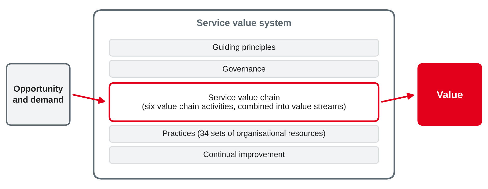
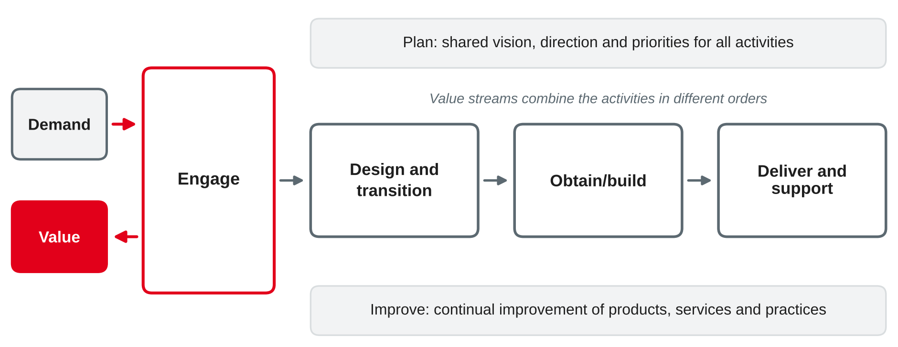

IT Management and EAM
Service concepts · four dimensions · service value system and value chain · guiding principles · practices
DHBW · Digital Business Management (Business IT) · Semester 4
You were asked to describe an IT service you use at work as a "product".
From IT department to service provider
Technology view
Service view
IT service management (ITSM) is the set of capabilities to plan, deliver, operate and improve IT services so that they create value for customers.
Own summary based on Beims and Ziegenbein (2023) and Krcmar (2015).
For organisations, the certifiable standard for service management is ISO/IEC 20000-1.
Based on AXELOS (2019), Beims and Ziegenbein (2023) and ISO/IEC (2018).
Value, outcomes, costs and risks
A service enables value co-creation: it helps customers achieve the outcomes they want, without the customer having to manage specific costs and risks themselves.
| Term | Meaning in own words | Example: mobile workplace |
|---|---|---|
| Value | Perceived benefit, usefulness and importance | Sales staff can work at the customer's site |
| Output | Deliverable of an activity | Configured laptop, VPN access |
| Outcome | Result for a stakeholder, enabled by outputs | Offers are sent on the same day |
| Costs and risks | Removed from the consumer, or imposed on them | Removed: buying hardware; imposed: monthly fee |
Own wording based on AXELOS (2019).
Utility — fit for purpose
Warranty — fit for use
A service creates value only if it has both: useful functions that work reliably when needed.
Own wording based on AXELOS (2019).
Roles on the consumer side
A service offering can include
Service relationship = service provision + service consumption + service relationship management.
Own wording based on AXELOS (2019).
Take the IT service you described for today. With your neighbour:
Organisations and people
Structures, roles, skills, culture and leadership needed to provide the service.
Information and technology
Information and knowledge, applications, infrastructure and tools.
Partners and suppliers
Other organisations involved: cloud providers, vendors, outsourcers.
Value streams and processes
How the parts work together to create value: activities, workflows, controls.
External factors (PESTLE: political, economic, social, technological, legal, environmental) influence all four dimensions.
Own wording based on AXELOS (2019).
Value chain, guiding principles and practices

Own illustration based on AXELOS (2019).

Own illustration based on AXELOS (2019).
| Activity | Purpose in own words |
|---|---|
| Plan | Shared understanding of vision, current status and direction for products, services and practices |
| Improve | Continual improvement of products, services and practices across all activities |
| Engage | Understand stakeholder needs, stay transparent and keep good relationships |
| Design and transition | Make sure products and services meet expectations on quality, cost and time to market |
| Obtain/build | Make sure service components are available when and where needed and meet specifications |
| Deliver and support | Deliver and support services according to agreed specifications and expectations |
Own wording based on AXELOS (2019).
Example value stream: "An employee's e-mail stops working — and works again"
| Step | Value chain activity |
|---|---|
| Employee contacts the service desk via the portal | Engage |
| Service desk logs, diagnoses and tries a known fix | Deliver and support |
| Faulty laptop is replaced from stock | Obtain/build |
| New laptop is configured and handed over | Deliver and support |
| Employee confirms that e-mail works again | Engage |
| Repeated failures of this model are analysed | Improve |
Own example based on AXELOS (2019).
| Principle | In short |
|---|---|
| Focus on value | Everything should link back to value for stakeholders |
| Start where you are | Assess and reuse what exists before building something new |
| Progress iteratively with feedback | Work in small, manageable steps and use feedback |
| Collaborate and promote visibility | Work across boundaries; make work and decisions transparent |
| Think and work holistically | Consider the whole system, including all four dimensions |
| Keep it simple and practical | Remove steps that do not add value; use as few steps as possible |
| Optimise and automate | Optimise first, then automate where it adds value |
Own wording based on AXELOS (2019).
Which guiding principle is applied or violated? Justify in one sentence.
Own wording based on AXELOS (2019).
A practice is a set of organisational resources (people, information, tools, processes, partners) for doing work or reaching an objective. ITIL 4 describes 34 practices in three groups.
| Group | Number | Examples |
|---|---|---|
| General management | 14 | Strategy management, portfolio management, information security management, relationship management, supplier management, continual improvement |
| Service management | 17 | Service level management, service desk, incident management, problem management, change enablement, service request management, service catalogue management |
| Technical management | 3 | Deployment management, infrastructure and platform management, software development and management |
Based on AXELOS (2019).
| Framework | Focus | Relation to ITIL |
|---|---|---|
| ISO/IEC 20000-1 | Requirements for a service management system; organisations can be certified | ITIL practices help to meet the requirements |
| COBIT 2019 | Governance and management of enterprise IT | COBIT says what to control (e.g. DSS domain); ITIL describes how to run services |
| ITIL 4 | Good practice for service management | Adopt and adapt; no organisational certification |
Based on ISO/IEC (2018), ISACA (2018) and Beims and Ziegenbein (2023).
Case: Rhein-Neckar Mobil Group (sessions 3–4) has set up a federated IT. Group IT now offers the on-board ticketing service to the bus and rail unit: ticket devices on 400 buses, card payment, a back-end for fares and sales data.
Tasks:
Preparation: think of the last time you reported an IT problem at work. What happened between your report and the fix — and were you told how long it would take?
ITIL® is a registered trademark of PeopleCert group. Diagrams in this deck are own illustrations.